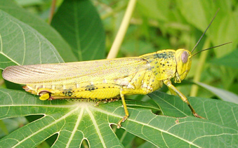

Malaysia Trav-E-Logs©
| Tioman Island | |
| back: Makasar | Bali Hai? |
================================= Bats, crocodile-sized lizards, monkeys, huge, beautiful spiders, coral, and colorful fish. That simply sizes up the somewhat famous island of Tioman. =================================August 15 - 18, 2003
Tioman Island was first popularized by the movie South Pacific, but irrevocably cast as a tourist spot when Time Magazine subsequently listed it as one of the 10 most beautiful islands in the world. So many words have been written about the bars, beaches, diving, hiking, and snorkeling, that there is no need to repeat any of them here. Airport. Casino. Duty-free-zone. One man's paradise is another's calamity.
A few pictures were taken on the island, as a "single use" underwater camera has not been located to capture the coral and fish.
July and August are the biggest tourist months on Tioman, but as luck would have it, still was able to find a room -- at the forth place down the beach. Spent some more time experimenting with the camera, and found it is a fixed focus, fixed aperture camera with a macro mode. Understanding the limitations will go a long way in trying to take pictures. Included in the experiments are a macro of a flower and a photo of my room.
Checked out the dump after hearing that the big monitor lizards hang out there when not disturbed. Sure enough, two big ones made a hasty exit as soon as they saw me at the entrance from 100 yards away. That's much too far to get photos with this camera! But my description is: similar to an alligator, but with a smaller head and a revealing forked tongue tasting the air. While walking around some of the resident cabins, a juvenile monitor lizard appeared in time to have his picture taken.
The snorkeling was nothing to write home about -- mostly distressed hard corals and some nicely colored fish. Hopefully in the Perhentians....
Tourists and backpackers do not often visit the East Coast of peninsular Malaysia, so that's my call. Heading north, towards Thailand, next two stops are Kuantan and Cherating.
Photo, below left: Locust on Tioman island.
|  |
Enjoy!
Bill
------------------------------
Email me at the juno.com address "dancer2SEAsia"
"Travel is Fatal to Bigotry, Prejudice, and Narrow-minded ness" .... attributed to Mark Twain
| next: MalaysiaECoast |
| back: Makasar |